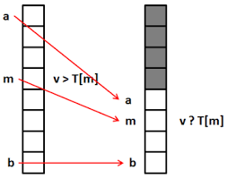

1. L'histoire de python
Pour commencer python en NSI nous en apprenons plus sur ce langage que nous utiliserons toute l'année scolaire en NSI : python est un langage de programmation interprété .
développé par Guido Von Rossum, à l'Université d'Amsterdan. Python est devenu un language de programmation très utilisé dans l'industrie et dans le milieu académique et scolaire.
il est très facile à apprendre d'où le ce choix pour un enseignement en lycée. Étant gratuit et disponible sur toutes les plateformes il est devenu l'un des languages
les plus populaires au monde.

2. listes, tuples et dictionnaires
Au programme de la NSI en python, nous étudions les différents moyens pour stocker des données. Pour commencer: les listes. elles permettent
de stocker des entiers, des flottants, des caractères ou des listes de listes. Pour avoir l'élément que l'on cherche dans une liste il suffit de nommer la
liste puis de nommer son emplacement, exemple : L=[1,56,2,15] si je fais L[1] j'obtient 15. Les listes permettant d'être concaténé entre elle et permet même de rajouter
des éléments dedans après avoir crée cette liste. Ce qui n'est pas le cas des tuples, les tuples fonctionnent avec des parenthèses et les données a l'intérieur ne
peuvent être changés. Puis ensuite dans le programme de NSI sur python nous avons vu les dictionnaire, qui permettent de rassembler des éléments mais ceux-ci
seront identifiés par une clé. On peut faire l’analogie avec un dictionnaire de français où on accède à une définition avec un mot.
on précise une clé au moyen d’une chaîne de caractères suivie de : puis de la valeur associée.
Les dictionnaires fonctionnent donc avec clé : valeur et cela permet de renseigné beaucoup de valeur
3 . tri et fusion de table
Plus récemment nous avons vu au programme de la NSI le tri et la fusion de table. Tout cela se base sur de la recherche à l'intérieur d'une liste avec la commande
for element in liste. On a appris à rechercher des données dans des listes, des tuples et des dictionnaires. Grâce à cela, nous avons pu en apprendre plus sur
la recherche dichotomique, créée par le physicien John Mauchly en 1946 elle permet de rechercher un entier et sa position dans une liste triée. Cette méthode de
recherche est peu "couteuse" mais ne fonctionne que sur une liste triée. Et nous avons finis cette séquence en travaillant sur un dictionnaire qui comportait
les espèces d'un zoo
